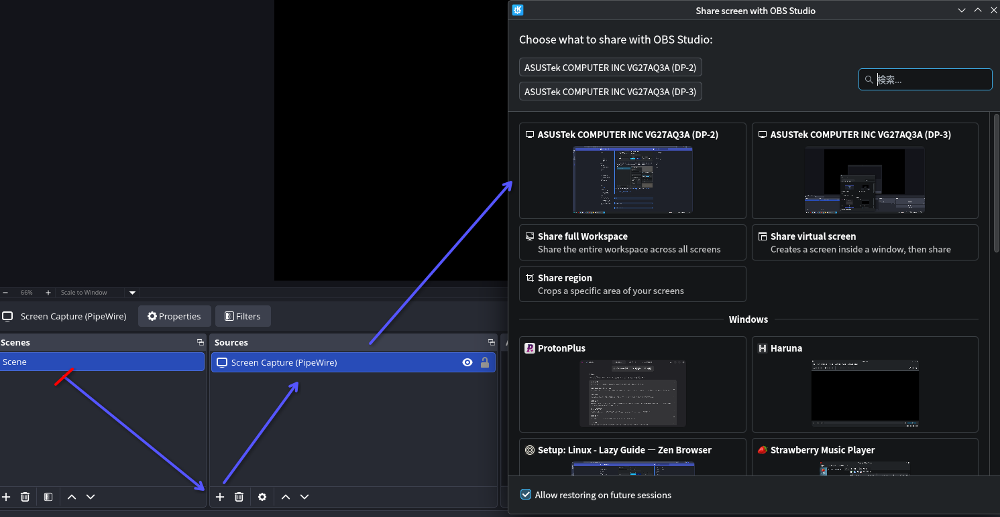
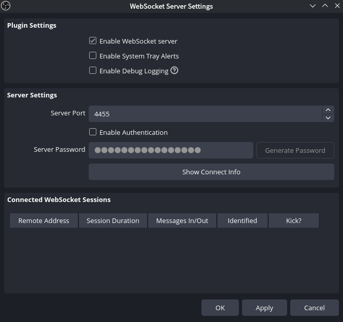
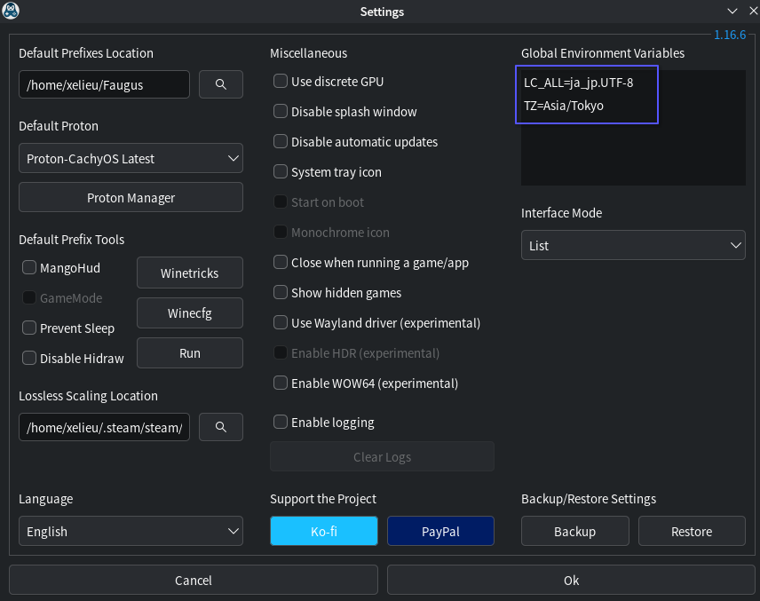

セットアップ: Linux
-
すべてのガイドを1ページにまとめています。多くの手順が元のガイドと分岐するためです。
- 混乱を避けるため、不要なガイド（例：Yomitan）がある場合はその都度記載します。
-
作業中
- 自動スクリーンショットには対応していますが、自動音声録音にはまだ対応していません。（必要であればGSMも使えますが、私の「Lazy」スタイルには少し機能が多すぎます。）
事前にインストールするパッケージ (クリックして開く)
事前にインストールするパッケージ
このガイドを最初から最後まで進める予定であれば、以下をまとめてインストールしてください。
Pacman
- 7zip（任意）
- Anki
- Flatpak
- Python（OCR・マンガ用）
- Zen Browser（任意・Firefoxベース）
- Fcitx5
- Mozc
- Noto Sans JP
Flatpak
- OBS Studio
Paru (AUR)
- Faugus Launcher（ビジュアルノベル用）
日本語入力とフォント表示 (クリックして開く)
日本語入力とフォント表示
日本語入力のインストール
-
まず、
fcitx5、mozc、Noto Sans JPフォントをインストールします。 -
ファイルを作成して開きます。
-
以下の設定を貼り付けます。
-
CTRL + O→ENTER→CTRL + Xで保存して終了します。 -
ターミナルを閉じて構いません。
日本語入力の設定
-
PCを再ログインまたは再起動します。
-
KDE システム設定 → キーボード → 仮想キーボード →
Fcitx 5 Wayland Launcherを選択します。 -
KDE システム設定 → キーボード → キーバインドの設定 → 日本語キーボードオプション → 「全角/半角キーを追加のEscキーとして使用」 を OFF にします。
-
KDE システム設定 → 入力メソッド →
Mozcを追加します。（既に追加されている場合もあります。）
フォント表示
-
~/.config/fontconfig/fonts.confを開きます。 -
fonts.confの内容を、Arch Wiki を参考に、以下の設定へ置き換えます。font.conf (クリックして開く)
<?xml version="1.0"?> <!DOCTYPE fontconfig SYSTEM "urn:fontconfig:fonts.dtd"> <fontconfig> <!-- Default serif font --> <alias binding="strong"> <family>serif</family> <prefer> <family>PT Serif</family> </prefer> </alias> <!-- Default sans-serif font --> <alias binding="strong"> <family>sans-serif</family> <prefer> <family>Roboto</family> </prefer> </alias> <!-- Default monospace font --> <alias binding="strong"> <family>monospace</family> <prefer> <family>Cascadia Code PL</family> </prefer> </alias> <!-- Default system-ui font --> <alias binding="strong"> <family>system-ui</family> <prefer> <family>Roboto</family> </prefer> </alias> <!-- Serif CJK --> <!-- Default serif when the "lang" attribute is not given --> <!-- You can change this font to the language variant you want --> <match target="pattern"> <test name="family"> <string>serif</string> </test> <edit name="family" mode="append" binding="strong"> <string>Noto Serif CJK SC</string> </edit> </match> <!-- Japanese --> <!-- "lang=ja" or "lang=ja-*" --> <match target="pattern"> <test name="lang" compare="contains"> <string>ja</string> </test> <test name="family"> <string>serif</string> </test> <edit name="family" mode="append" binding="strong"> <string>Noto Serif CJK JP</string> </edit> </match> <!-- Korean --> <!-- "lang=ko" or "lang=ko-*" --> <match target="pattern"> <test name="lang" compare="contains"> <string>ko</string> </test> <test name="family"> <string>serif</string> </test> <edit name="family" mode="append" binding="strong"> <string>Noto Serif CJK KR</string> </edit> </match> <!-- Chinese --> <!-- "lang=zh" or "lang=zh-*" --> <match target="pattern"> <test name="lang" compare="contains"> <string>zh</string> </test> <test name="family"> <string>serif</string> </test> <edit name="family" mode="append" binding="strong"> <string>Noto Serif CJK SC</string> </edit> </match> <!-- "lang=zh-hans" or "lang=zh-hans-*" --> <match target="pattern"> <test name="lang" compare="contains"> <string>zh-hans</string> </test> <test name="family"> <string>serif</string> </test> <edit name="family" mode="append" binding="strong"> <string>Noto Serif CJK SC</string> </edit> </match> <!-- "lang=zh-hant" or "lang=zh-hant-*" --> <match target="pattern"> <test name="lang" compare="contains"> <string>zh-hant</string> </test> <test name="family"> <string>serif</string> </test> <edit name="family" mode="append" binding="strong"> <string>Noto Serif CJK TC</string> </edit> </match> <!-- Compatible --> <!-- "lang=zh-cn" or "lang=zh-cn-*" --> <match target="pattern"> <test name="lang" compare="contains"> <string>zh-cn</string> </test> <test name="family"> <string>serif</string> </test> <edit name="family" mode="append" binding="strong"> <string>Noto Serif CJK SC</string> </edit> </match> <!-- "lang=zh-tw" or "lang=zh-tw-*" --> <match target="pattern"> <test name="lang" compare="contains"> <string>zh-tw</string> </test> <test name="family"> <string>serif</string> </test> <edit name="family" mode="append" binding="strong"> <string>Noto Serif CJK TC</string> </edit> </match> <!-- Sans CJK --> <!-- Default sans-serif when the "lang" attribute is not given --> <!-- You can change this font to the language variant you want --> <match target="pattern"> <test name="family"> <string>sans-serif</string> </test> <edit name="family" mode="append" binding="strong"> <string>Noto Sans CJK SC</string> </edit> </match> <!-- Japanese --> <!-- "lang=ja" or "lang=ja-*" --> <match target="pattern"> <test name="lang" compare="contains"> <string>ja</string> </test> <test name="family"> <string>sans-serif</string> </test> <edit name="family" mode="append" binding="strong"> <string>Noto Sans CJK JP</string> </edit> </match> <!-- Korean --> <!-- "lang=ko" or "lang=ko-*" --> <match target="pattern"> <test name="lang" compare="contains"> <string>ko</string> </test> <test name="family"> <string>sans-serif</string> </test> <edit name="family" mode="append" binding="strong"> <string>Noto Sans CJK KR</string> </edit> </match> <!-- Chinese --> <!-- "lang=zh" or "lang=zh-*" --> <match target="pattern"> <test name="lang" compare="contains"> <string>zh</string> </test> <test name="family"> <string>sans-serif</string> </test> <edit name="family" mode="append" binding="strong"> <string>Noto Sans CJK SC</string> </edit> </match> <!-- "lang=zh-hans" or "lang=zh-hans-*" --> <match target="pattern"> <test name="lang" compare="contains"> <string>zh-hans</string> </test> <test name="family"> <string>sans-serif</string> </test> <edit name="family" mode="append" binding="strong"> <string>Noto Sans CJK SC</string> </edit> </match> <!-- "lang=zh-hant" or "lang=zh-hant-*" --> <match target="pattern"> <test name="lang" compare="contains"> <string>zh-hant</string> </test> <test name="family"> <string>sans-serif</string> </test> <edit name="family" mode="append" binding="strong"> <string>Noto Sans CJK TC</string> </edit> </match> <!-- "lang=zh-hant-hk" or "lang=zh-hant-hk-*" --> <match target="pattern"> <test name="lang" compare="contains"> <string>zh-hant-hk</string> </test> <test name="family"> <string>sans-serif</string> </test> <edit name="family" mode="append" binding="strong"> <string>Noto Sans CJK HK</string> </edit> </match> <!-- Compatible --> <!-- "lang=zh-cn" or "lang=zh-cn-*" --> <match target="pattern"> <test name="lang" compare="contains"> <string>zh-cn</string> </test> <test name="family"> <string>sans-serif</string> </test> <edit name="family" mode="append" binding="strong"> <string>Noto Sans CJK SC</string> </edit> </match> <!-- "lang=zh-tw" or "lang=zh-tw-*" --> <match target="pattern"> <test name="lang" compare="contains"> <string>zh-tw</string> </test> <test name="family"> <string>sans-serif</string> </test> <edit name="family" mode="append" binding="strong"> <string>Noto Sans CJK TC</string> </edit> </match> <!-- "lang=zh-hk" or "lang=zh-hk-*" --> <match target="pattern"> <test name="lang" compare="contains"> <string>zh-hk</string> </test> <test name="family"> <string>sans-serif</string> </test> <edit name="family" mode="append" binding="strong"> <string>Noto Sans CJK HK</string> </edit> </match> <!-- Mono CJK --> <!-- Default monospace when the "lang" attribute is not given --> <!-- You can change this font to the language variant you want --> <match target="pattern"> <test name="family"> <string>monospace</string> </test> <edit name="family" mode="append" binding="strong"> <string>Noto Sans Mono CJK SC</string> </edit> </match> <!-- Japanese --> <!-- "lang=ja" or "lang=ja-*" --> <match target="pattern"> <test name="lang" compare="contains"> <string>ja</string> </test> <test name="family"> <string>monospace</string> </test> <edit name="family" mode="append" binding="strong"> <string>Noto Sans Mono CJK JP</string> </edit> </match> <!-- Korean --> <!-- "lang=ko" or "lang=ko-*" --> <match target="pattern"> <test name="lang" compare="contains"> <string>ko</string> </test> <test name="family"> <string>monospace</string> </test> <edit name="family" mode="append" binding="strong"> <string>Noto Sans Mono CJK KR</string> </edit> </match> <!-- Chinese --> <!-- "lang=zh" or "lang=zh-*" --> <match target="pattern"> <test name="lang" compare="contains"> <string>zh</string> </test> <test name="family"> <string>monospace</string> </test> <edit name="family" mode="append" binding="strong"> <string>Noto Sans Mono CJK SC</string> </edit> </match> <!-- "lang=zh-hans" or "lang=zh-hans-*" --> <match target="pattern"> <test name="lang" compare="contains"> <string>zh-hans</string> </test> <test name="family"> <string>monospace</string> </test> <edit name="family" mode="append" binding="strong"> <string>Noto Sans Mono CJK SC</string> </edit> </match> <!-- "lang=zh-hant" or "lang=zh-hant-*" --> <match target="pattern"> <test name="lang" compare="contains"> <string>zh-hant</string> </test> <test name="family"> <string>monospace</string> </test> <edit name="family" mode="append" binding="strong"> <string>Noto Sans Mono CJK TC</string> </edit> </match> <!-- "lang=zh-hant-hk" or "lang=zh-hant-hk-*" --> <match target="pattern"> <test name="lang" compare="contains"> <string>zh-hant-hk</string> </test> <test name="family"> <string>monospace</string> </test> <edit name="family" mode="append" binding="strong"> <string>Noto Sans Mono CJK HK</string> </edit> </match> <!-- Compatible --> <!-- "lang=zh-cn" or "lang=zh-cn-*" --> <match target="pattern"> <test name="lang" compare="contains"> <string>zh-cn</string> </test> <test name="family"> <string>monospace</string> </test> <edit name="family" mode="append" binding="strong"> <string>Noto Sans Mono CJK SC</string> </edit> </match> <!-- "lang=zh-tw" or "lang=zh-tw-*" --> <match target="pattern"> <test name="lang" compare="contains"> <string>zh-tw</string> </test> <test name="family"> <string>monospace</string> </test> <edit name="family" mode="append" binding="strong"> <string>Noto Sans Mono CJK TC</string> </edit> </match> <!-- "lang=zh-hk" or "lang=zh-hk-*" --> <match target="pattern"> <test name="lang" compare="contains"> <string>zh-hk</string> </test> <test name="family"> <string>monospace</string> </test> <edit name="family" mode="append" binding="strong"> <string>Noto Sans Mono CJK HK</string> </edit> </match> <!-- System UI CJK --> <!-- Default system-ui when the "lang" attribute is not given --> <!-- You can change this font to the language variant you want --> <match target="pattern"> <test name="family"> <string>system-ui</string> </test> <edit name="family" mode="append" binding="strong"> <string>Noto Sans CJK SC</string> </edit> </match> <!-- Japanese --> <!-- "lang=ja" or "lang=ja-*" --> <match target="pattern"> <test name="lang" compare="contains"> <string>ja</string> </test> <test name="family"> <string>system-ui</string> </test> <edit name="family" mode="append" binding="strong"> <string>Noto Sans CJK JP</string> </edit> </match> <!-- Korean --> <!-- "lang=ko" or "lang=ko-*" --> <match target="pattern"> <test name="lang" compare="contains"> <string>ko</string> </test> <test name="family"> <string>system-ui</string> </test> <edit name="family" mode="append" binding="strong"> <string>Noto Sans CJK KR</string> </edit> </match> <!-- Chinese --> <!-- "lang=zh" or "lang=zh-*" --> <match target="pattern"> <test name="lang" compare="contains"> <string>zh</string> </test> <test name="family"> <string>system-ui</string> </test> <edit name="family" mode="append" binding="strong"> <string>Noto Sans CJK SC</string> </edit> </match> <!-- "lang=zh-hans" or "lang=zh-hans-*" --> <match target="pattern"> <test name="lang" compare="contains"> <string>zh-hans</string> </test> <test name="family"> <string>system-ui</string> </test> <edit name="family" mode="append" binding="strong"> <string>Noto Sans CJK SC</string> </edit> </match> <!-- "lang=zh-hant" or "lang=zh-hant-*" --> <match target="pattern"> <test name="lang" compare="contains"> <string>zh-hant</string> </test> <test name="family"> <string>system-ui</string> </test> <edit name="family" mode="append" binding="strong"> <string>Noto Sans CJK TC</string> </edit> </match> <!-- "lang=zh-hant-hk" or "lang=zh-hant-hk-*" --> <match target="pattern"> <test name="lang" compare="contains"> <string>zh-hant-hk</string> </test> <test name="family"> <string>system-ui</string> </test> <edit name="family" mode="append" binding="strong"> <string>Noto Sans CJK HK</string> </edit> </match> <!-- Compatible --> <!-- "lang=zh-cn" or "lang=zh-cn-*" --> <match target="pattern"> <test name="lang" compare="contains"> <string>zh-cn</string> </test> <test name="family"> <string>system-ui</string> </test> <edit name="family" mode="append" binding="strong"> <string>Noto Sans CJK SC</string> </edit> </match> <!-- "lang=zh-tw" or "lang=zh-tw-*" --> <match target="pattern"> <test name="lang" compare="contains"> <string>zh-tw</string> </test> <test name="family"> <string>system-ui</string> </test> <edit name="family" mode="append" binding="strong"> <string>Noto Sans CJK TC</string> </edit> </match> <!-- "lang=zh-hk" or "lang=zh-hk-*" --> <match target="pattern"> <test name="lang" compare="contains"> <string>zh-hk</string> </test> <test name="family"> <string>system-ui</string> </test> <edit name="family" mode="append" binding="strong"> <string>Noto Sans CJK HK</string> </edit> </match> </fontconfig> -
ターミナルで以下のコマンドを実行し、フォントキャッシュを更新します。
-
Zen Browser または Firefox の設定を開き、詳細設定からフォントを
Noto Sans CJK JPに変更します。 -
完了です！
Anki (クリックして開く)
Anki
Ankiのインストール
Ankiをインストールします。
Ankiのセットアップ
-
Setup: Anki の手順に従ってください。
- 手順2で
addonsを展開する場所は~/.var/app/net.ankiweb.Anki/data/Anki2/です。
- 手順2で
-
完了です！
Yomitan (クリックして開く)
Yomitan
Yomitanのセットアップ
-
Setup: Yomitan PC に進み、Firefox版の手順に従ってください（Zen Browserでも同じ手順です）。
-
完了です！
マイニング自動スクショ (クリックして開く)
マイニング自動スクショ
必要なもの
-
auto_screenshot Ankiアドオンをダウンロードします（作成者: kamper）
-
AnkiとOBS Studioをインストールします。
スクリーンショットマイニングのセットアップ
-
Ankiを開き、
Ctrl + Shift + AまたはTools→Add-ons→View Filesを選択してaddonsフォルダを開きます。 -
auto_screenshot.7z（パスワード:lazyguide）を展開し、auto_screenshotフォルダをaddonsフォルダへコピーします。 -
Ankiを再起動し、Tools→Mining Mode→OBSを選択します（まだ設定していない場合）。- スクリーンショット機能を無効にしたい場合は、
OBS Modeをオフにしてください。
- スクリーンショット機能を無効にしたい場合は、
-
OBS Studioを起動し、自動設定ウィザードが表示された場合はスキップします。-
左下の
ソース→スクリーンキャプチャ→OKを選択し、画面全体または特定のアプリケーションを追加します。
-
-
OBS StudioのメニューバーからTools→WebSocket Server Settingsを開き、Enable WebSocket Serverを有効にし、Enable Authenticationを無効にします。
-
システムトレイの
OBS Studioアイコンを右クリックし、必要であればHideを選択します。AnkiとOBS Studioは常に起動した状態にしておいてください。
-
これでマイニング時に、現在設定している
Sceneの内容が自動でスクリーンショットされます。- マイニング時にエラーが出る場合は、
Mining Mode: OBSが有効でOBS Studioが起動していることを確認したうえで、Ankiを再起動してください。
- マイニング時にエラーが出る場合は、
「作業中」 ノベルゲーム (クリックして開く)
ビジュアルノベル
※この方法は、現在のところSteam以外のビジュアルノベルのみで動作確認しています。
必要なもの
- PC版Yomitan のセットアップが完了していること
-
Textractor 5.2.0 をダウンロードして展開(?)してください（パスワード：
lazyguide） -
Faugus Launcherをインストール
システムロケールを日本語に設定
-
ターミナルで以下を開きます。
-
下へスクロールし、
#ja_JP.UTF-8 UTF-8の先頭の#を削除して、ja_JP.UTF-8 UTF-8にします。- アルファベット順に並んでいるので、よく探してください。
-
次のコマンドを実行します。
ビジュアルノベルのセットアップ
-
Faugus Launcherを開き、Settings>Global Environment Variablesから以下を追加します。LC_ALL=ja_jp.UTF-8TZ=Asia/TokyoPROTON_ENABLE_WAYLAND=0（任意：動画が再生されないなど、互換性向上のため）
-
Faugus Launcherの＋ (Add)ボタン >Game/App>Pathから、ビジュアルノベルの.exeファイルを指定します。 -
VNを右クリック >
Edit>Toolsタブ >Additional Applicationを有効化 >PathにTextractorの.exeを指定します（x86版推奨）。
-
あとは PC版VNセットアップ の
Textractorセクションの 手順3 から進めてください。Textractorで日本語が □（四角）で表示される場合は、Info 3: Textractorで日本語が四角になる場合 を確認してください。
-
完了です！ビジュアルノベルをお楽しみください。
「作業中」 OCR (クリックして開く)
OCR
OCR関連パッケージのインストール
- ターミナルで以下を実行します。
OCRセットアップ
-
ターミナルでPython仮想環境を作成します。
-
owocrをインストールします。 -
標準スクリーンショットアプリ
Spectacleを使用します。Meta + Shift + S>オプション
-
Generalタブで以下を設定します。- スクリーンショット後 > 「画像をクリップボードにコピー」
Region Selection> 両方とも「何もしない」
-
Save Location（2番目のタブ）へ移動します。- 保存先を
"/path/to/your/OCR Picture/"に設定します。- このパスは後述の 手順10 と OCR Shortcut でも使用します。
- 保存先を
-
ショートカット
Region Capture（領域を撮影）をMeta + Shift + Sに設定します（デフォルトとして使用）。
-
撮影後に右下へ表示される通知は、不要であればオフにして構いません。
-
使用方法
- OCR：撮影後に
Saveを押すと、自動でOCRが実行されます。 - OCRを使わない場合：
Copy（クリップボードへコピー）またはSave As...を使用してください。
- OCR：撮影後に
-
OWOCRはフォルダー（推奨）またはクリップボードのどちらでも使用できます。 -
フォルダー監視（保存して閉じる）
-
クリップボード
-
完了です！
OCRショートカット（自動起動）
-
ショートカットファイルを作成します。
-
以下を貼り付けて保存します（フォルダー方式推奨）。
-
フォルダー（保存先を変更してください）
-
クリップボード
-
-
KDEの「システム設定」> 「自動起動」から
start_owocr.shを追加します（再起動後に自動実行されます）。 -
（任意）タスクバーの
owocr（uwuアイコン）>Configure>Engines- Primary：
Chrome Screen AI - Secondary：
Manga OCR (segmented)
- Primary：
-
完了です！
「作業中」 漫画 (クリックして開く)
マンガ
マンガ関連パッケージのインストール
- ターミナルで以下を実行します。
OCR
- OCR の手順を参照してください。
Mokuro（オンライン処理）
- PC版マンガセットアップ - オンライン処理 の手順をそのまま実行してください。
Mokuro（ローカル処理）
-
owocrで作成したjptools-env環境をそのまま使えます（Pythonは毎回仮想環境を有効化する必要があります）。初めて仮想環境を作成する場合はこちらを実行してください。 ``` python3 -m venv ~/jptools-env source ~/jptools-env/bin/activate.fish ``` -
mokuroをインストールします。 -
ターミナルで以下のいずれかを実行します。
-
マンガ全巻を処理する場合
mokuro --parent_dir F:\Manga\Saenai- パスは実際のフォルダーに置き換えてください。
Saenaiはマンガ名（スペースなし）に変更してください。Saenaiフォルダー内にはVol1、Vol2、Vol3... のように順番に並べてください。
-
特定の巻だけ処理する場合
mokuro F:\Manga\Saenai\Vol3- パス、マンガ名、巻数を実際のものに置き換えてください。
-
-
完了です！
処理済みマンガを読む
-
PC版マンガセットアップ - 処理済みマンガを読む の手順に従ってください。
-
完了です！
「作業中」 アニメ (クリックして開く)
アニメ
必要なもの
- PC版Yomitan のセットアップが完了していること
アニメのセットアップ
-
PC版アニメセットアップ の手順をそのまま実行してください。
- Chrome / Edge 用の説明は無視してください。
-
完了です！
ゲーム (クリックして開く)
ゲーム
ゲーム関連パッケージのインストール
Steam以外のゲームや .exe インストーラーは、Steamの**「Steam以外のゲームを追加」から登録し、プロパティ → 互換性 →「特定のSteam Play互換ツールの使用を強制する」→ Proton CachyOS（最新版）を選択することで起動できます。
以下は必要に応じてインストールしてください。
-
Faugus：ノベルゲーム向け
-
ProtonPlus：Protonのインストール・管理ツール
-
Twintail：一部のソーシャルゲーム（ガチャゲーム）向け
ターミナルに以下を貼り付けて実行してください：
インストール後、ProtonPlus を起動し、Proton-CachyOS（Latest） をインストールしてください。
Steamの推奨設定：
- インターフェース
- 言語：日本語
-
起動時の表示：ライブラリ
-
ダウンロード
- シェーダーキャッシュ：無効
-
ゲーム中のダウンロード：有効
-
互換性
- Proton-CachyOS（Latest） を使用
グローバル環境設定
-
ターミナルで以下を実行します。
-
使用しているGPUに応じて、以下のいずれかを
gaming.confに貼り付け、保存してください（Ctrl + S）。
-
PCを再起動してください。
-
※基本的には Steam のみ設定すれば十分です。Lutris や Heroic は必須ではないため、必要になるまで無視して構いません。
- Lutris は GOG・Epic Games・EA・Ubisoft に対応しています。必要な場合は、Runner → Wine → 設定 → Wine version → Proton-CachyOS（Latest） を選択してください。
参考資料： CachyOS Gaming (右上の言語メニューから日本語に変更できます。)
思ったより「Lazy Guide」ではありませんでしたね？これでLinux環境のセットアップは完了です！
続いてサブガイドも見てみましょう。